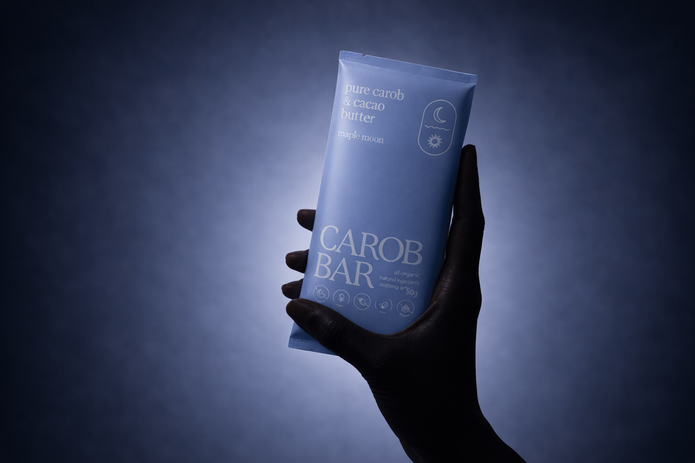

EXAMPLE 1 — Brunswick origin band (NEW section)
Real photo (mm_falai_brunswick.png) · copy place-corrected to Brunswick Heads · facts from about_page.md

Our Story
Handmade in Brunswick Heads.
Every Maple Moon bar is made by hand, in small batches, on the far north coast of New South Wales. Australian-grown carob pods, sun-ripened and slow-roasted, then milled with cacao butter and nothing else. The coast is where we make, where we pack, and where we ship from.
Read our storyEXAMPLE 2 — Ritual variant B · hand-held lifestyle
Split layout + feature list, CSS plinth replaced with real photo (hero_carob_bar_hand.png) · mobile bug fixed
A sweeter kind of ritual.
After Dinner
In the Evening
On the Go
Anytime

EXAMPLE 3 — Ritual variant C · reworked editorial concept
Full-bleed evening scene (hero_moons_lifestyle.png), copy overlaid, icon-list dropped for an inline moments row

A sweeter kind of ritual.
For the slow part of the evening, when the light goes soft and there is nothing left to do but enjoy it.
After dinnerIn the eveningOn the goAnytime